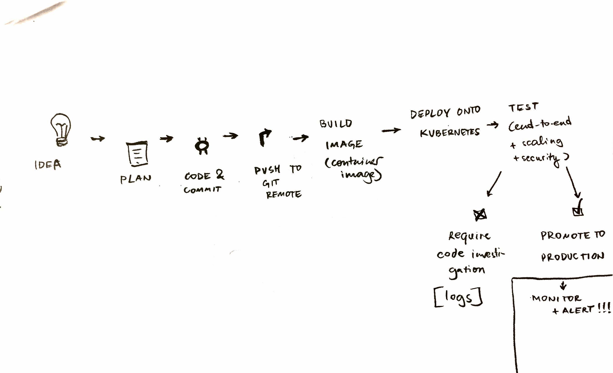

Business value of DevOps
This article highlights the value of DevOps for businesses, Q&A-style.
Question: what problems do enterprises face that DevOps can solve?
- Communication problems between developers ("hm, works on my laptop")
- Inability to quickly go from commit to release
- Problems with reliability in production: lack of scalability, frequent downtime, slow response times
- Late responses to problems in production
Task: draw a diagram for the whole DevOps process

Task: describe the process of a software release, step-by-step
-
Idea
-
Plan
-
Code, commit, push to feature-branch
-
Pipeline:
- build
- deploy
- test end-to-end
-
When happy, merge pull request into master, then run pipeline:
- build
- deploy
- test end-to-end
-
Monitor and respond to alerts when necessary.
Question: who's responsibility is each step?
Steps 4 and 5 are done via a CI pipeline.
Other steps are done by humans, such as marketing people or engineering people.
Question: what's the point of DevOps?
With DevOps, we get:
- Increased deployment frequency (feature / hotfix releases)
- Reliable releases that never fail in production
Business value:
- Happy application developers
- Less time (on payroll) spent on fixing and maintaining things
- Happy end customers (requested features and fixes get delivered quicker and reliably)
- No PR blunders due to security issues